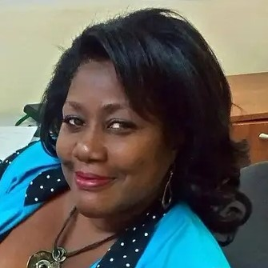
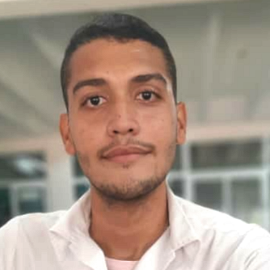

correo: rctec@infomed.sld.cu Sede: Facultad de Tecnología de la Salud de la Universidad de Ciencias Médicas de La Habana Calle Carvajal Nº155 /Agua Dulce y Calle A, Cerro. La Habana. Sitio: http://www.revtecnologia.sld.cu
| Dr.C. Mayelín Llosa Santana Editora EjecutivaProfesora de la Facultad de Tecnología de la Salud Enivar un correo |  Dr.C. Dayamí Gutierrez Vera Editora EjecutivaProfesora de la Facultad de Tecnología de la Salud Enivar un correo |  Est. Carlos Rafael Araujo Inastrilla MaquetadorEstudiante de Sistemas de Información en Salud Enivar un correo |
|---|